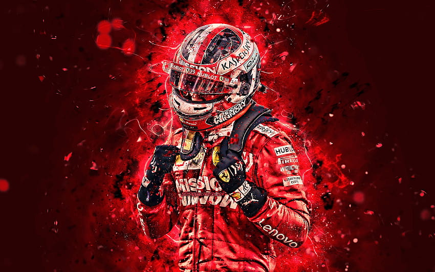

primer
segundo
tercero
cuarto

Charles Marc Hervé Perceval Leclerc nació el 16 de octubre de 1997 en Montecarlo, situado en el principado de Mónaco. Desde muy pequeño y a raíz de sus origines, Charles Leclerc se metió en el mundo del automovilismo con ocho años (2005). Sus primeros éxitos en el karting llegaron en 2005, 2006 y 2008 al ganar el Campeonato PACA de Francia, pero su gran golpe llegó en 2011 al ganar el Campeonato Mundial de Karting.
CHAELES LECLERC